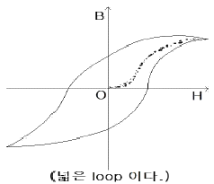
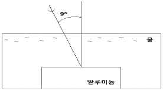
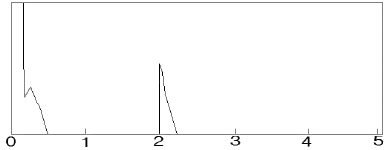
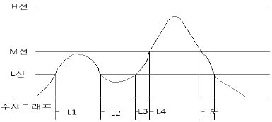
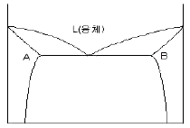

초음파비파괴검사기능사 (2009-03-29 기출문제)
1과목: 초음파탐상시험법
1. 음향임피던스에 대한 설명 중 틀린 것은?
- 음파의 진행을 방해한다.
- 재질에 따라 값이 다르다.
- 속도와 부피의 곱으로 구한다.
- 임피던스 차가 클수록 계면에서 더 많이 반사한다.
(정답률: 69%)

2. 초음파탐상시험시 시험체의 거리를 신속히 측정하기 위해 탐상기의 스크린상에 눈금으로 나눈 것을 무엇이라 하는가?
- 감쇠
- 주사
- 공진
- 운동
(정답률: 60%)
3. 초음파탐상시험시 시험체의 거리를 신속히 측정하기 위해 탐상기의 스크린상에 눈금으로 나눈 것을 무엇이라 하는가?
- 송신펄스
- 시간축조절기
- 마커(Marker)
- 리젝션(Rehection)
(정답률: 65%)
4. 금속재료에 대한 초음파탐상시험시 그 재료 내부의 결정 입자가 큰 경우 시험에 미치는 영향으로 틀린 것은?
- 잡음 신호가 많이 발생한다.
- 초음파의 침투력이 감소한다.
- 저면 반사파의 크기가 감소한다.
- 초음파의 산란이 적어 탐상이 유리하다.
(정답률: 86%)
5. 초음파탐상 장비의 게인을 12dB 올렸다면 시험장치의 증폭인자는 약 얼마만큼 변하는가?
- 증폭비가 2:1 로 증가한다.
- 증복비가 4:1 로 증가한다.
- 증복비가 6:1 로 증가한다.
- 증복비가 12:1로 증가한다.
(정답률: 58%)
6. 초음파탐상시험법에 대한 설명이 잘못된 것은?
- 주강품 검사에는 고주파수를 사용하는 것이 좋다.
- 용접부 탐상에는 경사각탐촉자를 사용하는 것이 좋다.
- 두께가 두꺼운 시험체는 저주파수를 사용하는 것이 좋다.
- 접촉매질은 시험체의 특성에 따라 적당한 것을 사용한다.
(정답률: 65%)
7. 초음파탐상시험에 대한 분류로 잘못 설명된 것은?
- 탐촉자의 형태에 따라 펄스반사법, 투과법, 공진법 등으로 분류한다.
- 탐상도형의 표시 방식에 따라 A,B,C 스코프 등으로 분류한다.
- 초음파진동방식에 따라 수직, 경사각, 표면파, 판파 탐상법 등으로 분류한다.
- 접촉방법에 따라 직접 접촉법과 수침법 등으로 분류 한다.
(정답률: 48%)
8. 두 매질의 접촉면에 동일 파의 입사각과 반사각의 크기를 비교하였을 때 다음 중 옳은 설명은?
- 반사각과 입사각은 동일하다.
- 반사각은 입사각의 √2배 정도이다.
- 반사각은 항상 입사각의 2배 정도이다.
- 반사각은 항상 입가각의 약 1/2정도 이다.
(정답률: 75%)
9. 초음파가 한 재질에서 다른 재질로 진행할 때 탄성도 및 밀도 등이 달라 그 진행 방향이 변하는 것을 무엇이라 하는가?
- 산란(scattering)
- 반사(reflection)
- 굴절(refraction)
- 감쇠(attenuation)
(정답률: 79%)
10. 동일 음속의 경우 다음 중 가장 짧은 파장의 주파수는?
- 1MHz
- 2MHz
- 3MHz
- 5MHz
(정답률: 50%)
11. 탐촉자의 감도는 탐촉자의 어떤 능력을 말하는가?
- 작은 결함을 탐상할 수 있는 능력
- 많은 종류의 결함을 탐상할 수 있는 능력
- 탐상 시편의 표면 근처의 결함을 탐상할 수 있는 능력
- 서로 밀접해 있는 두 개의 결함을 탐상 할수 있는 능력
(정답률: 67%)
12. 다음 중 방사선투과시험과 초음파탐상시험을 비교하여 초음파탐상시험이 월등히 우수한 경우는?
- 결함의 종류 판별
- blow hole검출
- 용접부의 결함의 검출
- lamination 검출
(정답률: 67%)
13. 와전류탐상시험의 특징에 대한 설명으로 옳은 것은?
- 주로 표면 및 표면직하의 결함을 검출하는 시험법이다.
- 가는선, 고온에서의 시험 등에는 부적합하다.
- 접촉법을 이용하므로 고속 자동화된 검사가 어렵다.
- 수 Hz에서 수백 Hz 의 교류를 주로 이용하므로 잡음인자의 영향이 적다.
(정답률: 86%)
14. 자분탐상시험의 장점이 아닌 것은?
- 시험체의 크기 및 형상 등에 크게 구애를 받지 않는다.
- 얇은 도장 등 비자성 물질이 도포되어도 작업이 가능하다.
- 결함의 모양이 표면에 직접 육안으로 관찰 할 수 있다.
- 오스테나이트계 스테인리스강의 표면균열 검사에 가장 적합하다.
(정답률: 50%)
15. 시험체 내부 결함이나 구조의 이상 유무를 판별하는데 이용되는 방사선의 특성은?
- 회절특성
- 분광특성
- 진동특성
- 투과특성
(정답률: 74%)
16. 형광침투액과 비교할 때 염색침투액의 장점으로 옳은 것은?
- 침투력이 뛰어나다.
- 미세 균열의 검출에 우수하다.
- 자연광에서 검사가 용이하고 장비의 사용이 간편하다.
- 형광침투액은 독성인 반면 염색침투액은 독성이 없다.
(정답률: 79%)
17. 중성자투과시험에 대한 설명으로 옳은 것은?
- 중성자는 중금속에 흡수가 크다.
- 중성자는 X선과 같이 직접적인 사진작용을 일으킨다.
- 중성자는 원자번호가 낮아 가벼운 물질일수록 흡수가 작다.
- 두꺼운 금속재 용기나 구조물의 내부에 있는 가벼운 수소화합물 등을 검출 할 수 있다.
(정답률: 71%)
18. 와전류탐상시험의 기본 원리로 옳은 것은?
- 누설흐름의 원리
- 전자유도의 원리
- 인장감도의 원리
- 잔류자계의 원리
(정답률: 50%)
19. 음향방출시험에 대한 설명으로 옳은 것은?
- 검출파형은 주로 돌발형과 연속형으로 나눈다.
- 배관시스템의 실시간 모니터링에는 적용할 수 없다.
- 초음파탐상검사보다 높은 주파수를 사용하는 것이 일반적이다.
- 탐촉자가 능동적으로 초음파를 송신하여 결함에서 반사된 수신파를 계측한다.
(정답률: 65%)
20. 다음 중 비금속 물질의 표면 불연속을 비파괴검사 할 때 가장 적합한 시험법은?
- 자분탐상시험법
- 초음파탐상시험법
- 침투탐상시험법
- 중성자투과시험법
(정답률: 47%)
2과목: 초음파탐상관련규격
21. 다음 중 반드시 시험 대상물의 앞면과 뒷면 모두 접근 가능해야 적용할 수 있는 비과괴검사법은?
- 방사선투과시험
- 초음파탐상시험
- 자분탐상시험
- 침투탐상시험
(정답률: 69%)
22. 그림과 같이 자기이력곡석의 폭이 넓은 루프(loop)일때의 설명으로 옳은 것은?

- 투자율이 낮다.
- 보자성이 낮다.
- 자기저항이 낮다.
- 잔류자기가 낮다.
(정답률: 39%)
23. 그림과 같이 물을 통하여 알루미늄에 초음파를 9°의 입사각으로 입사시킬 때 알루미늄에서의 굴절각은 약 몇 도 인가? (단, 물의 종파속도는 1500m/s, 알루미늄의 종파속도는 6300m/s 이다.)

- 10°
- 20°
- 30°
- 40°
(정답률: 31%)
24. 침투탐상시험시 침투액 적용 후 과잉 침투액 제거에 대한 설명으로 옳은 것은?
- 증기 세척기를 사용하여 과잉 침투액을 제거한다.
- 용제제거성 침투액을 쓰는 경우에만 과잉 침투액을 제거한다.
- 수세성 침투액을 사용한 경우 침투시간 경과 후 과잉 침투액을 제거한다.
- 후유화성 침투액을 사용한 경우 유화제를 적용하기 전에 과잉 침투액을 제거한다.
(정답률: 59%)
25. 고체가 소성 변형하면서 발생하는 탄성파를 검출하여 결함의 발생, 성장 등 재료 내부의 동적 거동을 평가하는 비파괴검사법은?
- 누설검사
- 음향방출시험
- 초음파탐상시험
- 와전류탐상시험
(정답률: 73%)
26. 초음파탐상 시험용 표준시험편(KS B 0831)에서 탐상용 STB-G형 시험편의 합격 여부 판정에서 시험편 반사원의 에코높이 측정값이 검정용 표준시험에서 기준으로 정한 기준값 범위로 틀린 것은?
- 2MHz에서 ±1dB 범위 내
- 2.5MHz에서 ±1.5dB 범위 내
- 5MHz에서 ±1dB 범위 내
- 10MHz에서 ±2dB 범위 내
(정답률: 57%)
27. 강용접부의 초음파탐상 시험방법(KS B 0896)에서 경사각탐촉자의 성능점검 항목이 아닌 것은?
- A1감도
- 원거리 분해능
- 근거리 분해능
- 빔 중심축으로 치우침
(정답률: 48%)
28. 강용접부의 초음파탐상 시험방법(KS B 0896)에서 모재의 판두께가 25mm 인 평판이음 용접부를 실측 굴절각 71° 탐촉자로 경사각탐상하고자 한다. 직사법을 이용할 경우가장 적합한 측정 법위는?
- 50mm
- 75mm
- 100mm
- 150mm
(정답률: 27%)
29. 강용접부의 초음파탐상 시험방법(KS B 0896)에 따른 음향 이방성의 측정에 사용되는 시험편은?
- STB-A1 시험편
- STB-A2 시험편
- STB-A8 시험편
- 시험체와 동일 강판의 평판 모양 시험편
(정답률: 53%)
30. 강관의 초음파탐상 검사 방법 (KS D 02501)에 따른 탐상형식에 해당되지 않은 것은?
- 수침법
- 겝(gep)법
- 커플법
- 직접 접촉법
(정답률: 67%)
31. 강 용접부의 초음파탐상 시험방법(KS B 0896)에서 모재 판두께가 20mm인 평판 이음 강용접부를 5M10x10A70 탐촉자를 사용하여 탐상하였다. 그림과 같이 표시기의 눈금 2지점에서 불연속부로부터의 최대 에코가 나타났다면 탐상면에서 이 불연속부의 깊이는 약 얼마인가? (단, 실측 굴절각은 68°, 측정범위는 125mm 이다.)

- 6.8mm
- 7.5mm
- 17.1mm
- 18.7mm
(정답률: 42%)
32. 초음파탐상 시험용 표준시험편(KS B 0831)에서 STB-G형 표준시험편의 종류 중 평저공의 직경이 가장 큰 것은?
- STB-G V5
- STB-G V8
- STB-G V15-2.8
- STB-G V15-5.6
(정답률: 67%)
33. 강 용접부의 초음파탐상 시험방법(KS B 0896)에 따라 원둘레이음 용접부를 탐상할 경우의 탐상방법에 대한 설명으로 옳은 것은?
- 클래드강판의 경우는 탐상면을 클래드강 쪽으로 한다.
- 판두께가 100mm이하인 경우는 탐상면이 바깥면(볼록 쪽)이다.
- 판두께가 10mm이하인 경우는 탐상면이 내ㆍ외면(요철면)이다.
- 판두께가 100mm를 넘는 경우는 탐상면이 바깥면(볼록 쪽)이다.
(정답률: 50%)
34. 강 용접부의 초음파탐상 시험방법(KS B 0896)에서 탠덤탐상의 적용 판두께 범위로 옳은 것은?
- 10mm이상
- 12mm이상
- 15mm이상
- 20mm이상
(정답률: 67%)
35. 강 용접부의 초음파탐상 시험 방법(KS B 0896)에서 탐상한 후의 기록 내용이 아닌 것은?
- 기후 조건 및 용접 모양
- 시험 기술자의 서명 및 자격
- 탐상 부분의 상태 및 손질 방법
- 사용한 탐촉자, 성능 및 점검일자
(정답률: 47%)
36. 초음파탐상 시험용 표준시험편(KS B 0831)에서 G형 STB 시험편의 검정조건 및 방법 중 검정용 표준시험편과 검정되는 시험편의 측정 횟수에 대한 규정으로 옳은 것은?
- 각 1회 실시
- 각 2회 실시
- 검정되는 시험편만 1회 실시
- 검정되는 시험편만 2회 실시
(정답률: 50%)
37. 강 용접부의 초음파탐상 시험방법(KS B 0896)에서 DAC 회로의 기점조정에 사용하는 시험편은?
- STB-A2
- STB-A1
- RB-E
- RB-TR47
(정답률: 58%)
38. 강 용접부의 초음파탐상 시험방법(KS B 0896)에 의한 경사각탐상에서 흠의 길이 방향으로 주사한 결과 그림과 같이 나타났다면 M검출 레벨의 경우 흠의 지시길이는 어느 것인가?

- L4
- L1, L4
- L3, L4, L5
- L1, L2, L3, L4, L5
(정답률: 64%)
39. 초음파탐상 시험용 표준시험편(KS B 0831)에서 STB-A2 시험편의 감도 등 조정목적으로 한 표준구멍은 몇 개 인가?
- 4
- 6
- 7
- 8
(정답률: 32%)
40. 금속재료의 펄스반사법에 따른 초음파탐상 시험방법 통칙(KS B 08170)에서 시험결의 평가 및 보고서 작성에 사용되는 탐상도형의 표시 기호를 틀리게 나타낸 것은?
- T : 송신펄스
- F : 흠집에코
- B : 바닥면에코
- W : 수신펄스
(정답률: 69%)
3과목: 금속재료일반 및 용접일반
41. LAN의 토플로지를 구성하는 방식으로 많은 호스트들이 한 방향의 전송 링크를 통해서 다른 호스트와 연결되어 전체적으로 하느의 닫혀진 원 모양을 하고 있는 방식으로 데이터는 한 호스트에서 다음 호스트로 한 비트씩 차례로 전송되는 방식을 무엇이라고 하는가?
- 스타형
- 링형
- 버스형
- 타워형
(정답률: 29%)
42. 다음 도메인 이름 중 기관 도메인에 속하지 않은 것은?
- ac
- com
- net
- kr
(정답률: 8%)
43. 다음 중 네트워크에 연결된 컴퓨터 시스템의 운영체제, 응용프로그램, 인터넷 서버 등의 취약점을 이용한 침입을 방지하는 기술은?
- 시스템 보안
- 데이터 보안
- 통신 규제
- 통신 검열
(정답률: 17%)
44. 다음 중 휴대용 컴퓨터에 주로 사용되는 운영체제는?
- unix
- lnux
- windows
- windows CE
(정답률: 16%)
45. 사용자가 웹 서버의 하이퍼텍스트 문서를 볼 수 있게 해 주는 클라이언트 프로그램을 무엇이라 하는가?
- 웹 브라우져
- 운영체제
- 워드프로세서
- 오라클
(정답률: 27%)
46. 다음 중 6:4 황동으로 상온에서 α+β 조직을 갖는 재료는?
- 알드리
- 알클래드
- 문쯔메탈
- 플래티나이트
(정답률: 88%)
47. 다음 중 재결정 온도가 가장 낮은 금속은?
- Mo
- Ni
- Cu
- Sn
(정답률: 43%)
48. 재료를 실온까지 온도를 내려서 다른 형상으로 변형시켰다가 다시 온도를 상승시키면 어느 일정한 온도 이상에서 원래의 형상으로 변화하는 성질을 이용한 합금은?
- 클래드 합금
- 형상 기억 합금
- 제진 합금
- 비정질 합금
(정답률: 75%)
49. 금속이 탄성변형 후에 소성변형을 일으키지 않고 파괴 되는 성질은?
- 인성
- 취성
- 인발
- 연성
(정답률: 70%)
50. 금속의 결정구조에 대한 설명으로 옳은 것은?
- 모든 금속의 결정 구조는 체심입방격자이다.
- 금속은 대부분 결정이 하나인 단결정체이다.
- 원자의 규칙적인 배열인 결정은 용해 중에 형성된다.
- 금속은 고체 상태에서 규칙적인 결정구조를 가진다.
(정답률: 84%)
51. 두 가지 이상의 금속원소가 간단한 원자비로 결합되어 현저하게 다른 성질을 갖는 화합물을 무엇이라고 하는가?
- 금속간 화합물
- 공정 화합물
- 공석 화합물
- 포정 화합물
(정답률: 71%)
52. 물의 상태도에서 액상, 기상, 고상 3종점에서 자유도는?
- 0
- 1
- 2
- 3
(정답률: 65%)
53. [그림]이 나타내는 상태도의 명칭은?

- 포정형 상태도
- 공정형 상태도
- 전율 고용체형 상태도
- 금속간 화합물 상태도
(정답률: 29%)
54. 잔류 오스테나이트를 실온에서 장시간 방치하면 치수에 변화를 일으킨다. 이러한 것을 방지하기 위한 방법은?
- 뜨임
- 담금질
- 심랭처리
- 시효처리
(정답률: 37%)
55. 다음 중 시멘타이트에 대한 설명으로 틀린 것은?
- 준안정 상태의 탄화물이다.
- 768℃에서 자기변태를 한다.
- Fe와 6.67%의 화합물이다.
- 900℃에서 장시간 가열하면 분해되어 흑연화된다.
(정답률: 53%)
56. 전기전도도가 금속 중에서 가장 우수하고, 대기 중에서는 녹이 슬지 않지만 황화수소계에는 검게 변하고 염산, 황산 등에 부식되고 비중이 약 10.5인 금속은?
- Sn
- Fe
- Al
- Ag
(정답률: 75%)
57. 인바나 엘린바는 열팽창 계수가 작아 계측기기 등에 널리 사용되는데 어떤 금속 합금으로 분류하는가?
- Cu-Sn계 합금
- Al-Mg계 합금
- Cu-Zn계 합금
- Ni-Fe계 합금
(정답률: 59%)
58. 1차 입력이 22[KVA]인 용접기에 220[V]의 전원전압을 사용 하였을 때 , 안전 스위치에 사용하는 퓨즈의 용량은 몇 [A] 인가?
- 50
- 100
- 150
- 200
(정답률: 58%)
59. 가스 용접에서 용제를 사용해야 하는 주된 이유를 설명한 것으로 가장 적합한 것은?
- 금속의 산화물이 생겨서 융착금속의 융합이 불량해지므로
- 불꽃에 영향을 주어 모재의 성분에 민감한 반응을 주므로
- 산화물을 혼입시켜서 결정이 비교적 미세한 용착금속을 얻을 수 있으므로
- 용접봉의 성분이 그대로 용착금속의 성분으로 되지 않으므로
(정답률: 50%)
60. 온도조절이 균일하고 정밀 이음이 가능하며 비교적 적은 부품의 대량생산에 가장 적합한 납땜법은?
- 노내 납땜
- 가스 납땜
- 유도가열 납땜
- 담금납땜
(정답률: 35%)